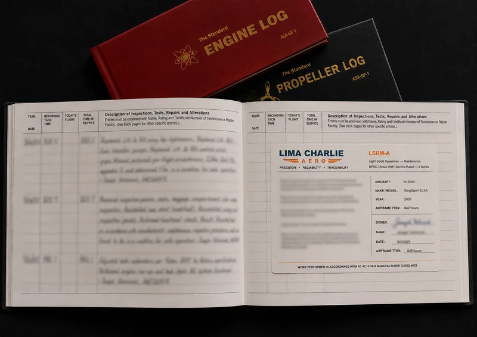

Upload Documents
Send logbooks, certificates, records, and photos through the intake form.
Remote Review
A high-value records review can identify missing entries, directive questions, inspection status, and ROTAX maintenance concerns before a visit, purchase, or maintenance plan.
Send Aircraft Details
Records Proof
A records review is not just a paperwork check. The goal is to preserve aircraft identity, engine time, work performed, signature data, configuration context, and missing-document questions before a support path is treated as settled.
Send Aircraft DetailsDocuments Requested
Records review is most useful when aircraft identity, operating authority, inspection history, engine status, propeller documentation, and recurring maintenance items can be reviewed together.
Output can include aircraft identity summary, missing records list, risk flags, service bulletin / safety directive status, inspection status, seller/owner questions, and recommended next steps.
Records to Send
Use Cases
Records review helps owners and buyers identify uncertainty before travel, ferry planning, aircraft downtime, or seller deadlines create pressure.
Send logbooks, certificates, records, and photos through the intake form.
Missing records, directive questions, and ROTAX maintenance issues are organized.
Questions for the owner/seller and maintenance planning priorities are identified.
What Records Reveal
A records review can show whether the aircraft story is continuous or fragmented. Airframe, engine, and propeller entries can reveal inspection timing, recurring discrepancies, skipped references, undocumented repairs, prior damage questions, rubber replacement history, and whether ROTAX-specific maintenance events were recorded clearly.
Missing records do not automatically mean the aircraft is unacceptable, but they do change the questions. A missing inspection entry, vague maintenance description, incomplete service bulletin note, or absent operating limitation can affect risk, pricing, scheduling, and whether a physical inspection should happen before money or travel is committed.
Documents That Help First
The most useful first set includes the airworthiness certificate, registration, operating limitations, weight and balance, equipment list, airframe logbooks, engine logbooks, propeller records, data plate photos, and the most recent inspection entry. For S-LSA and E-LSA aircraft, operating limitations and manufacturer instructions are especially important because they help define the maintenance boundary.
ROTAX-specific records to review include oil changes, gearbox or propeller-related entries, carburetor synchronization, rubber replacement, fuel system work, cooling-system work, ignition or EMS concerns, service bulletins, safety directives, and any installation or configuration changes.
Remote Limits
Remote review can organize uncertainty, identify missing documents, highlight questions, and define what should be checked next. It cannot verify physical condition, confirm hidden damage, prove airworthiness, or replace an aircraft inspection. If the records point to physical concerns, the next step may be a focused inspection, seller question list, or maintenance planning conversation.
That boundary is part of the value. The review separates what the documents support from what still needs aircraft access. The owner or buyer gets a clearer decision path instead of a pile of logbook photos and unanswered assumptions.
Start With the Facts
Records questions are usually about continuity, configuration, and what can actually be supported by the logbooks. Send the aircraft, records concern, and the decision you are trying to make.
Send Aircraft Details